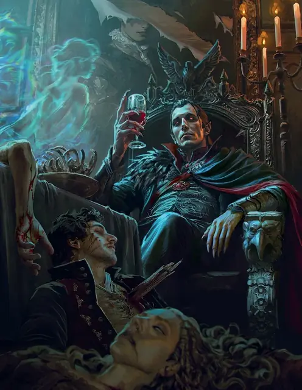

Страд фон Зарович
Strahd von Zarovich
Средняя Нежить (Вампир), Принципиальная Злая, именной НИП

Класс Защиты 16 Инициатива +9 (19)
Хиты 204 (24к8 + 96)
Скорость 40 футов, Лазания 40 футов
| мод | спас | ||
|---|---|---|---|
| СИЛ | 18 | +4 | +4 |
| ЛОВ | 18 | +4 | +9 |
| ТЕЛ | 18 | +4 | +4 |
| мод | спас | ||
|---|---|---|---|
| ИНТ | 20 | +5 | +5 |
| МДР | 15 | +2 | +7 |
| ХАР | 18 | +4 | +9 |
Сопротивление урону Некротический
Чувства Тёмное зрение 120 футов, пассивное Восприятие 22
Языки Общий, Бездны, Великаний, Драконий, Инфернальный, Эльфийский
Опасность 15 (13 000 опыта или 15 000 опыта в Домене; БВ +5)
Особенности
Восстановление Тёмного владыки. Спустя 1к10 недель после смерти Страд возрождается с полными Хитами где-то в Баровии.
Легендарное сопротивление (3/день, или 4/день в Домене). Если Страд проваливает спасбросок, он вместо этого может в нём преуспеть.
Туманный побег. Если Хиты Страда опускаются до 0 за пределами места отдыха, он использует Перевоплощение, чтобы превратиться в туман (действий не требуется). Если он не может использовать Перевоплощение, он уничтожается. Пока у Страда в форме тумана 0 Хитов, он не может вернуться в форму вампира и обязан добраться до места отдыха в течение 2 часов, иначе будет уничтожен. Достигнув места отдыха, Страд снова принимает форму вампира и получает состояние Парализованный до тех пор, пока не восстановит хотя бы 1 Хит. Проведя там 1 час, он восстанавливает 1 Хит.
Паучье лазание. Страд может лазать по сложным поверхностям, включая потолки, без совершения проверок характеристик.
Слабости вампира. Вампир обладает следующими слабостями:
Запрет. Страд не может войти в жилище без приглашения одного из обитателей.
Текущая вода. Страд получает 20 урона Кислотой, если заканчивает свой ход в текущей воде.
Кол в сердце. Если оружие, наносящее Колющий урон, вонзить в сердце Страда, пока он находится в своём месте отдыха и имеет состояние Недееспособный, он становится Парализован до тех пор, пока оружие не будет вынуто.
Солнечный свет. Страд получает 20 урона Излучением, если начинает свой ход на солнечном свету. Пока вампир на солнечном свету, он получает Помеху к броскам атаки и проверкам характеристик.
Действия
Мультиатака. Страд совершает две атаки Смертельным ударом. Он может заменить одну из этих атак использованием (А) Укуса или (Б) Сотворения заклинаний (Огненный шар), если он доступен.
Смертельный удар. Бросок рукопашной атаки: +9, досягаемость 5 фт. Попадание: 8 (1к8 + 4) Рубящего урона плюс 14 (4к6) Некротического урона. Если цель — существо Большого размера или меньше, она Схвачена (Сл освобождения от захвата 14) одной из двух рук.
Укус (только в форме вампира или летучей мыши). Спасбросок Телосложения: Сл 17, одно согласное или Схваченное или Недееспособное или Опутанное существо в пределах 5 футов. Провал: 7 (1к6 + 4) Колющего урона плюс 10 (3к6) Некротического урона. Максимум Хитов цели снижается на число, равное полученному Некротическому урону, а Страд восстанавливает такое же количество Хитов. Если Гуманоид, Хиты которого уменьшены этим уроном до 0, не воскрешён и его тело не уничтожено, то следующей ночью он восстанет в качестве Порождения вампира, находящегося под контролем Страда.
Сотворение заклинаний. Страд фон Зарович сотворяет одно из следующих заклинаний (заклинательная характеристика — Интеллект, Сл спасброска заклинаний 18):
Неограниченно: Волшебная рука, Обнаружение магии, Туманное облако
2/день каждое: Необнаружимость, Огненный шар, Отражения, Поднятие мертвеца, Порыв ветра
1/день каждое: Высшая невидимость, Наблюдение, Превращение
Бонусные действия
Очарование. Страд сотворяет Очарование личности, не нуждаясь в компонентах (заклинательная характеристика — та же, что для Сотворения заклинаний), а длительность заклинания равна 24 часам. Очарованная жертва будет согласной целью для Укуса Страда, а урон от него не прекращает действие заклинания. Когда заклинание оканчивается, цель не осознаёт, что была Очарована Страдом.
Перевоплощение. Если Страд не находится под солнечным светом или в текущей воде, он либо перевоплощается в летучую мышь Крошечного размера (Скорость 5 футов, Скорость полёта 30 футов), волка Среднего размера (Скорость 40 футов) или облако тумана Среднего размера (Скорость 5 футов, Скорость полёта 20 футов, парит), либо возвращается в форму вампира. Всё, что он носит, превращается вместе с ним.
Находясь в форме летучей мыши или волка, Страд не может говорить. Его статистика, кроме размера и Скорости, не меняется.
Находясь в форме тумана, Страд не может совершать действия, говорить и манипулировать объектами. Он ничего не весит и может входить в пространство враждебных существ и останавливаться там. Если через некое пространство может проходить воздух, то это же может сделать и туман, хотя он и не может пройти сквозь воду. Туман обладает Сопротивлением всему урону, за исключением урона, который он получает от солнечного света.
Легендарные действия
У этого существа есть 3 использования Легендарных действий (или 4 использования в Домене); оно может немедленно после окончания хода другого существа потратить одно использование, чтобы совершить одно из следующих действий. Существо восполняет все потраченные использования в начале каждого своего хода.
Веление графа. Страд сотворяет Приказ (версия 2-го уровня), не нуждаясь в компонентах (заклинательная характеристика — та же, что для Сотворения заклинаний).
Удар в движении. Страд перемещается на расстояние вплоть до половины своей Скорости и совершает один Смертельный удар.
Бонус мастерства +5
Страд фон Зарович
Первый из Тёмных владык
Граф Страд фон Зарович потерял всё, чего когда-либо желал, — раз за разом. Терзаемый Тёмными Силами, Страд мучится видениями утраченной семьи и поруганной чести. Долгие годы граф проводит в угрюмом уединении, бродя в недрах замка Равенлофт, но каждое поколение является новое воплощение его одержимости — Татьяна. Едва переродившаяся Татьяна появляется вновь, Страд пытается исправить ошибки прошлого и найти путь к её любви. Вновь и вновь его бессердечная, деспотичная натура заставляет кровавую историю повторяться, а Татьяну — ускользать из его хватки.
Суровый аристократ, граф обладает выправкой бывшего солдата и нетерпением того, кто привык к беспрекословному повиновению. Чувств в нём почти не осталось, но порой его забавляет новизна игры с занятными незнакомцами или сокрушение духа врагов. За свою противоестественно долгую жизнь он постиг множество тёмных тайн и загадок Доменов Ужаса. Величавая хладность Страда даёт трещину, едва кто-то нарушает его законы или отказывает ему в желаемом. Тогда Страд превращает противников в кровавый пример и растягивает возмездие на долгие кампании террора.
История Страда
Граф Страд фон Зарович был безжалостным завоевателем. Удалившись от дел после долгих лет войны, он поселился в прекрасной долине, где когда-то одержал свою величайшую победу. Там, следуя обычаю предков, он пролил свою кровь в землю, скрепив договор между собой и этим краем. В честь родителей, короля Барова и королевы Равеновии, он нарёк долину Баровией и воздвиг свой дом — замок Равенлофт.
Страд пригласил немногих оставшихся родичей жить с ним в замке, и со временем к нему присоединился младший брат Сергей. Юный, отзывчивый, сердечный — Сергей был всем, чем Страд не был. Вскоре после приезда младший фон Зарович и местная селянка по имени Татьяна полюбили друг друга. Страд завидовал брату, а после встречи с Татьяной, пленившей его своей кристальной добротой, — и подавно. Одержимый ею, он пытался добиться её расположения, но был отвергнут. Не желая мириться ни с её отказом, ни с мыслью, что Сергей в чём-то его превосходит, Страд заключил договор с древними злыми силами, чтобы вернуть себе жизненную мощь и завладеть сердцем Татьяны.
В день свадьбы Сергея и Татьяны Страд убил брата и, скрепляя договор, выпил его кровь. Свою новообретённую мощь он явил Татьяне, рассчитывая очаровать её. Вместо этого, объятая ужасом от убийства Сергея, Татьяна бежала от Страда — и в конце концов бросилась с высоты замка Равенлофт, исчезнув в Туманах. В тот же миг предатели из числа замковой стражи и свадебных гостей подняли мятеж, чтобы расправиться со Страдом. Несмотря на бессчётные раны, он не погиб: сделка с Тёмными Силами сделала Страда первым вампиром мультивселенной. Последовала ночь резни; когда рассвет коснулся стен замка Равенлофт, внутри не осталось ни одной живой души. Но остался Страд.
Злодейство Страда и его связь с этой землёй втянули всю Баровию в хватку Тёмных Сил, которые перенесли вампира и его владения в Царство Теней. Так началась череда мучений, терзающих графа и поныне. Взор Тёмных Сил ширился, втягивая в Туманы и других, порождая Домены Ужаса.
Домен Страда
Баровия, домен Страда, изменяется из-за его присутствия, что создаёт следующие эффекты:
• Закрытие границ. Когда Страд находится в домене, он способен по желанию закрывать или открывать границы Баровии. Когда границы закрыты, Туманы вокруг Баровии наполняются ядовитым смрадом. Существо, входящее в Туманы впервые за ход или начинающее в них свой ход, должно совершить спасбросок Телосложения Сл 20; при провале оно получает 1 уровень Истощения. Существо совершает этот спасбросок только один раз в ход.
• Жуткая тьма. Все существа в области Темноты, кроме Страда и его союзников, совершают с Помехой спасброски на избежание и окончание состояния Испуганный.
• Ревнивое сердце. Когда персонаж получает Героическое вдохновение, но уже обладает им, он не может передать его другому персонажу в группе.
Если Страд умирает, все эти эффекты мгновенно исчезают. Они возникают снова, если Страд возрождается (см. Восстановление Тёмного владыки).